A five piece exercise that people wanted to buy, and no structure to sell it.
NUCU started as a creative exercise: five pieces meant to bring together everything we had at hand, the traditional textiles, my partner’s fashion know how and my design. People liked them and the pieces kept selling.
But they sold one by one. There was no structure behind the work and no projection of a fixed income: every sale started from zero.
Keep every piece handmade and unique, but build each one from a defined pattern and one quality standard.
Around that rule I built a brand, the production processes and a small workshop, run as a boutique studio: two partners, two seamstresses and an assistant who did a bit of everything, working with three groups of traditional textile producers.
One
Mark
I created the brand so that every piece, however unique, read as NUCU. The mark is two stacked syllables, NU over CU. Each bag carries it twice: a woven tag inside with the artenucu.com address, and an acrylic plate outside, shown here on twelve fabrics from leather and suede to embroidered textiles.


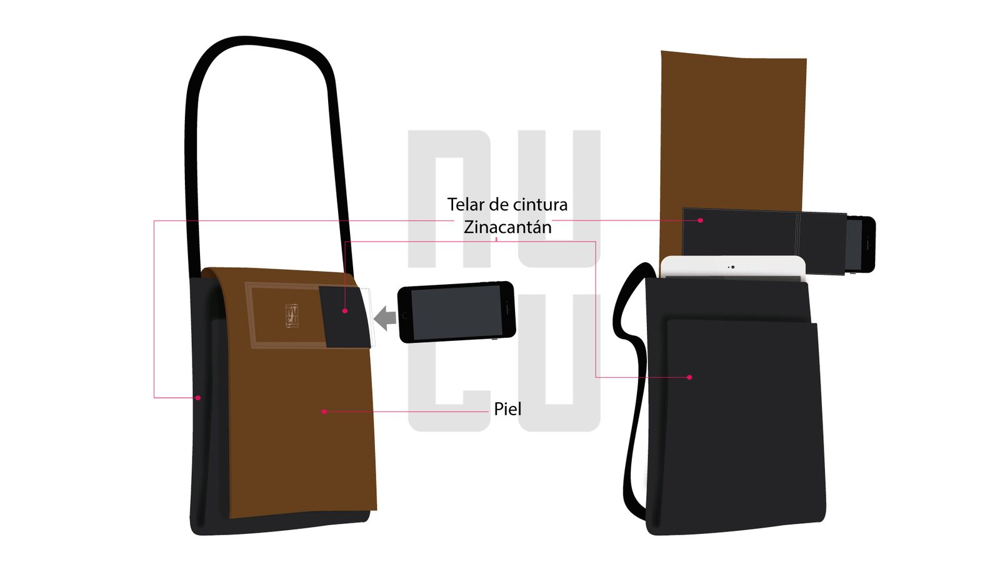
Drawn
First
My partner and I designed the products together, and I drew each one as a digital sheet before anything was cut. A sheet named every material and where it went, from leather and canvas to waist loom textiles from Zinacantán and brocade from San Andrés Larráinzar, and carried the dimensions I used to make the patterns.


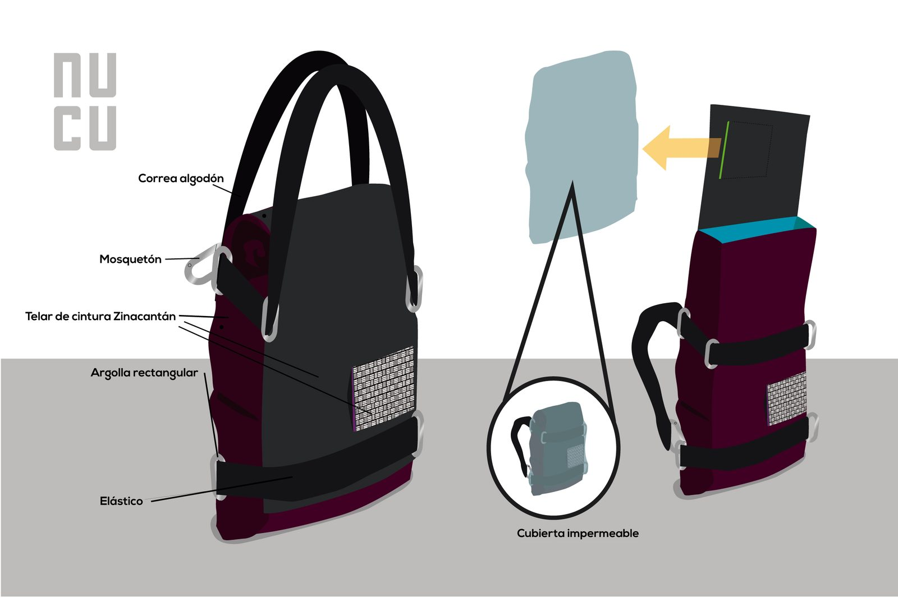
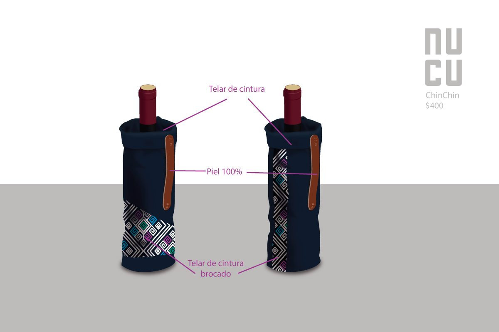
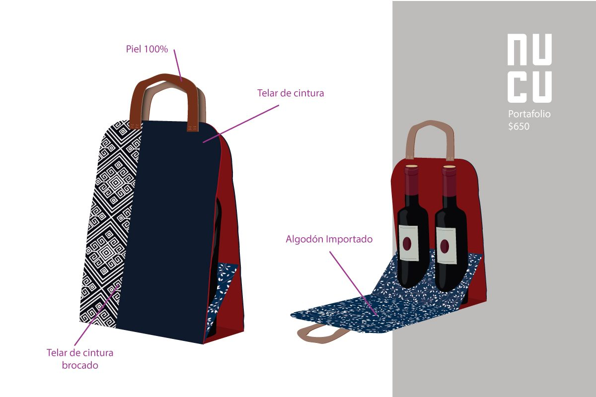
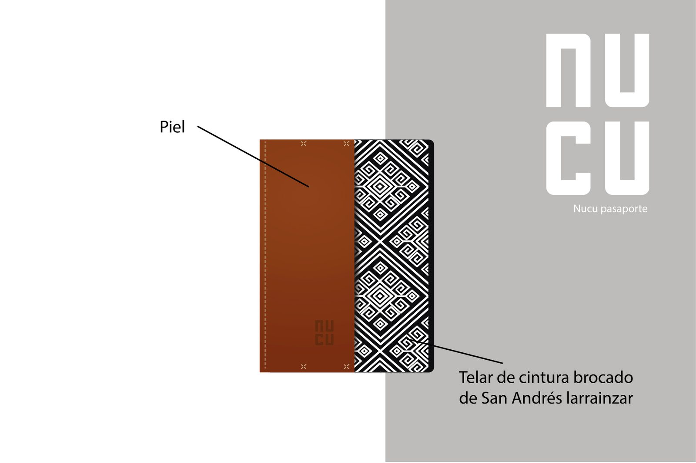
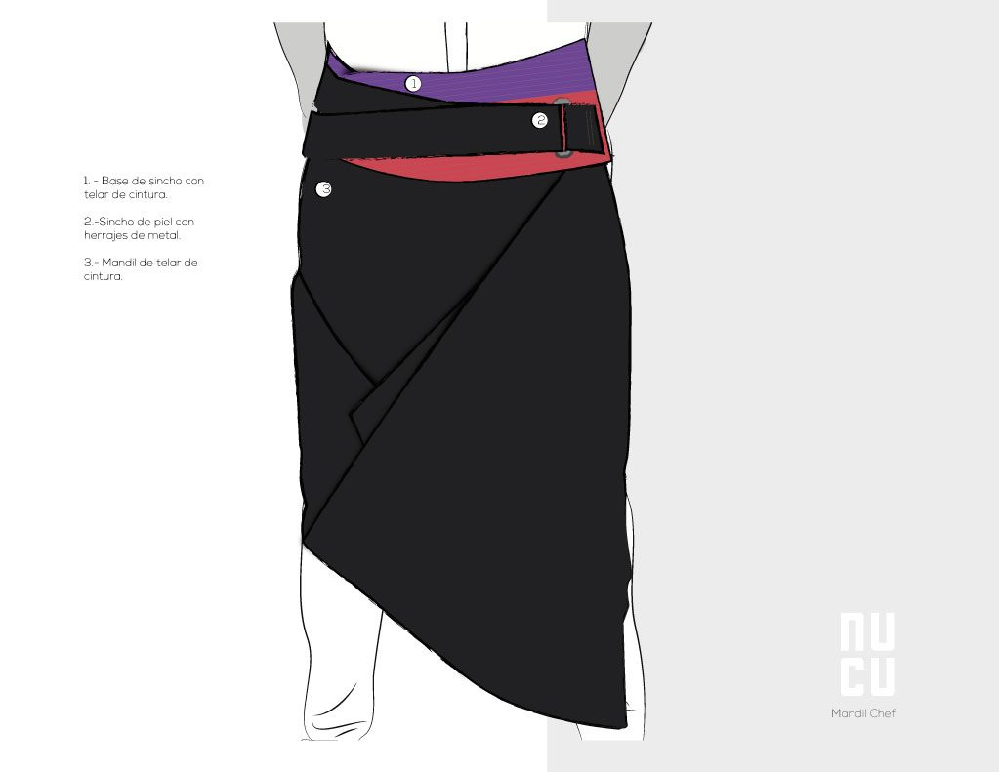
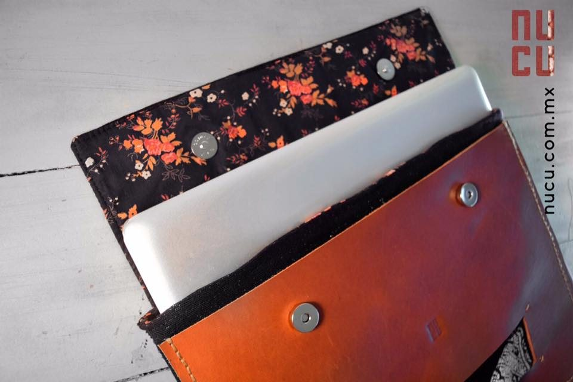
Sheet to
Product
I organized the production processes and set up the workshop where the sheets became bags. The pattern fixed the shape and the build; the textile changed from piece to piece, so every bag was still unique. I also produced some unique pieces myself.

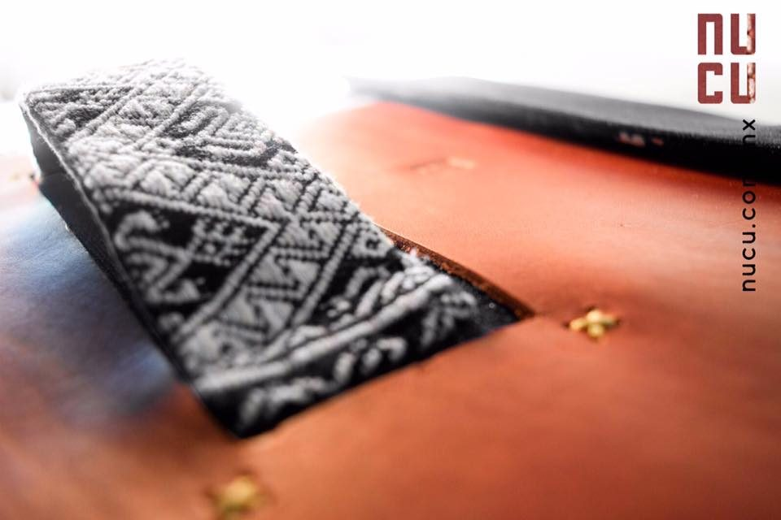
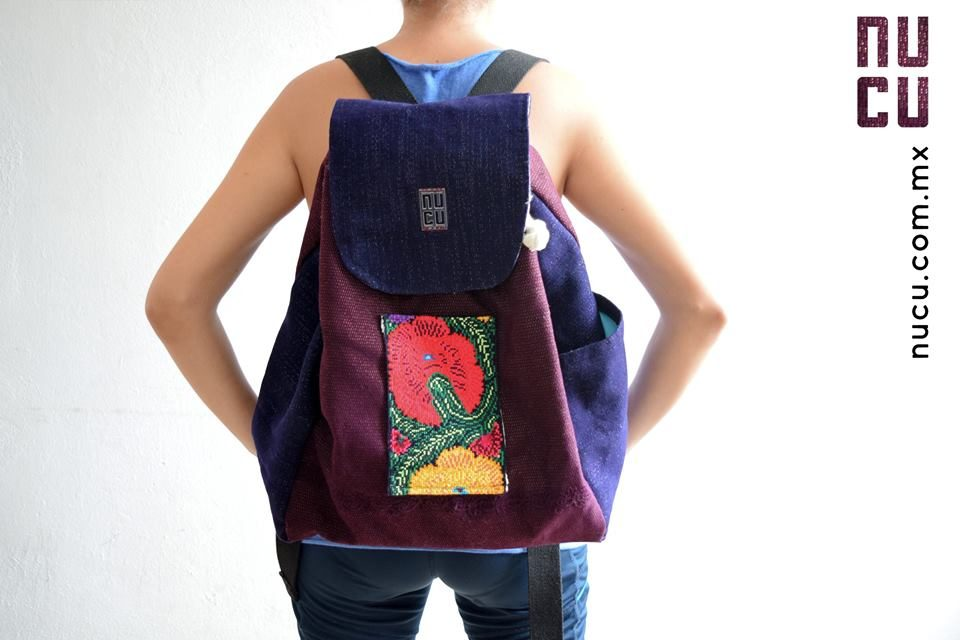
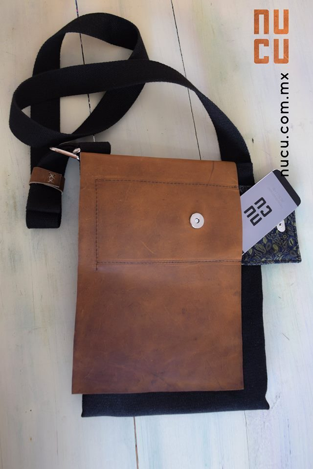
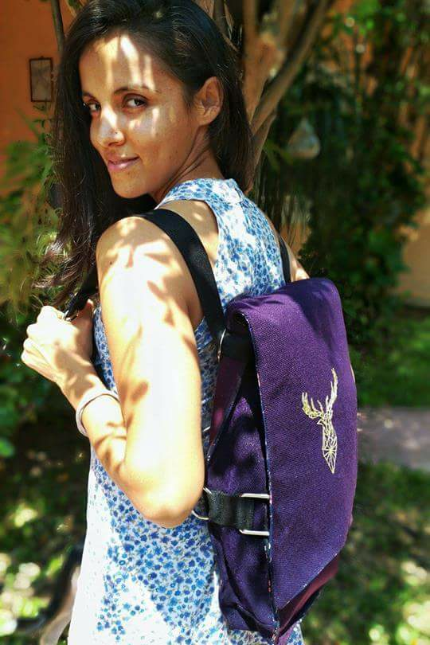
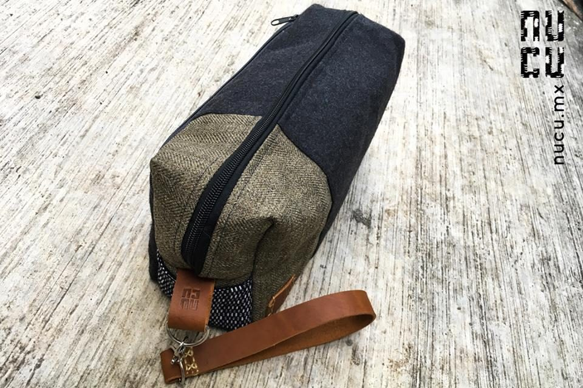

Shot
In House
I produced, directed and shot every photo shoot: several fashion shoots and a product shoot every two months, feeding the shop and social media. The illustrated set placed the bags against hand drawn walls, with concept and illustrations by Eek. The studio sets showed each bag on white from every angle, with the vertical NUCU signature and the artenucu.com address on the edge of each frame.


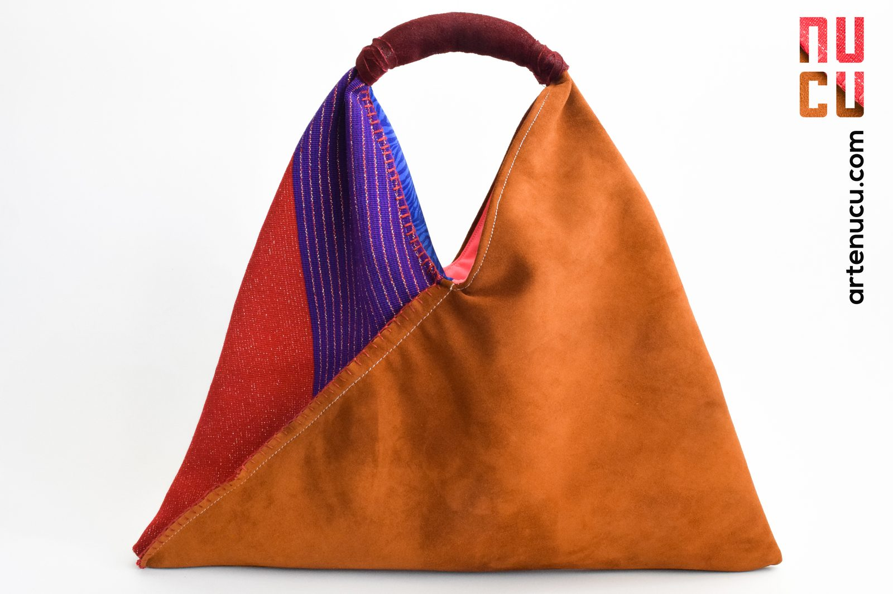

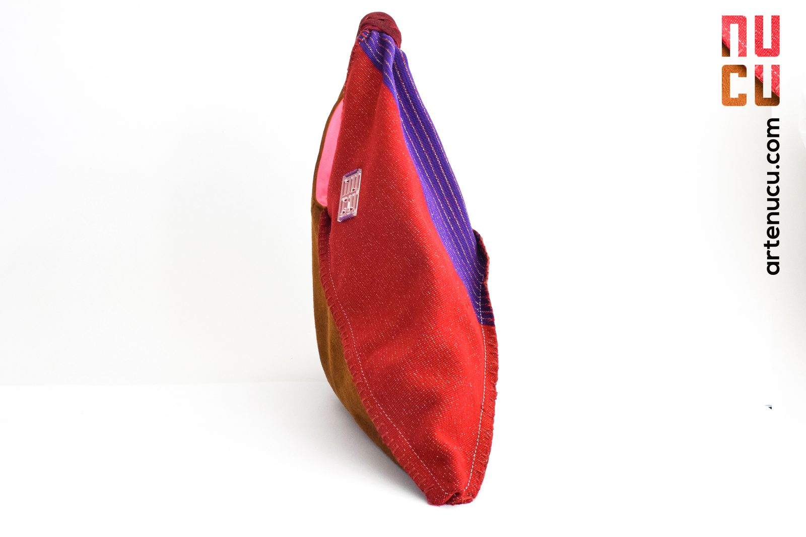
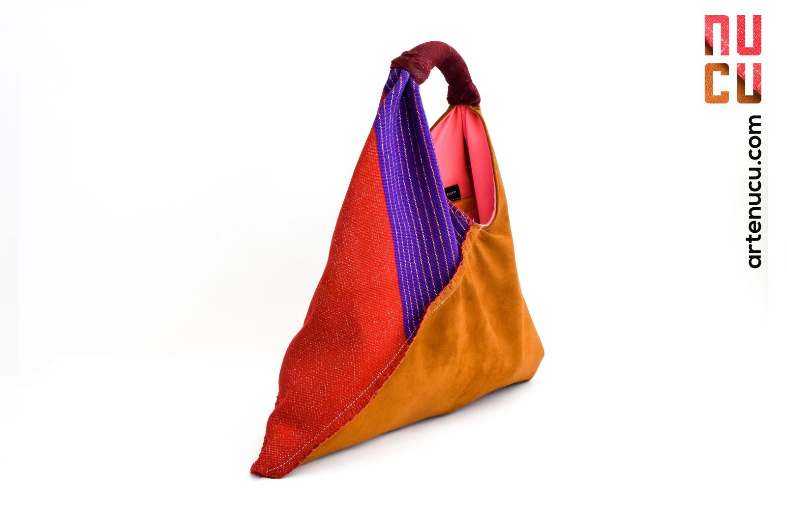
Black on
Black
Matte black envelope, gift bag and box, with the mark embossed black on black. Two short video teasers, edited in Premiere Pro and After Effects, introduced the brand.


Sold locally in Chiapas. Every piece unique, built on defined patterns and the quality standard I set.
Selling across Mexico and exporting to Europe and the United States, with two seamstresses, an assistant and three textile producer groups.
Gain in the workflow between designers and artisans, through better production documentation.
Seasons,
Not Pieces
What Went Well?
Systematic Growth From Year TwoOnce the patterns, the quality standard and the workshop were in place, growth became systematic: NUCU went from local sales in Chiapas to the whole country, and to exports in Europe and the United States.
What Could I Have Done Better?
A Seasonal Line Next to the Unique PiecesI thought of NUCU only as unique pieces. I would add seasonal lines made in series, still limited runs and never mass production, and keep the unique pieces as a separate line. That would have given the brand more weight and a wider reach.